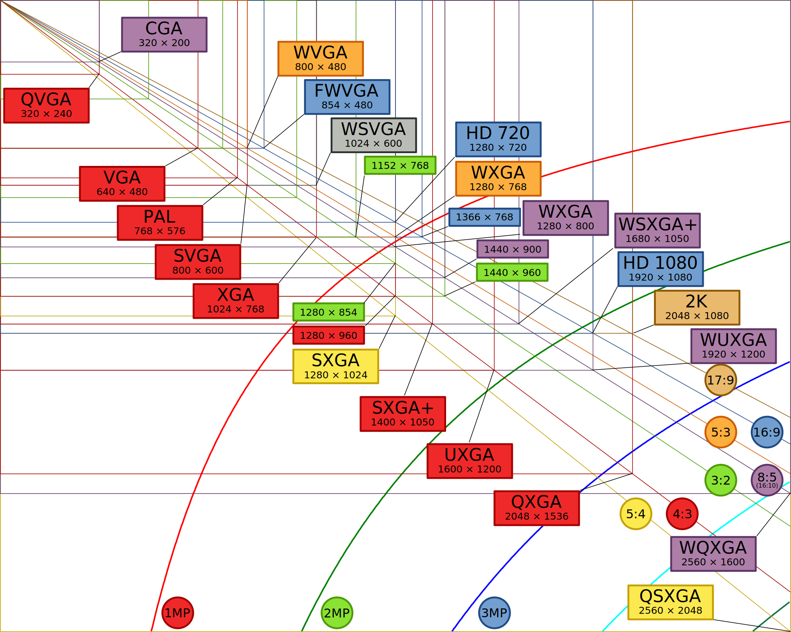
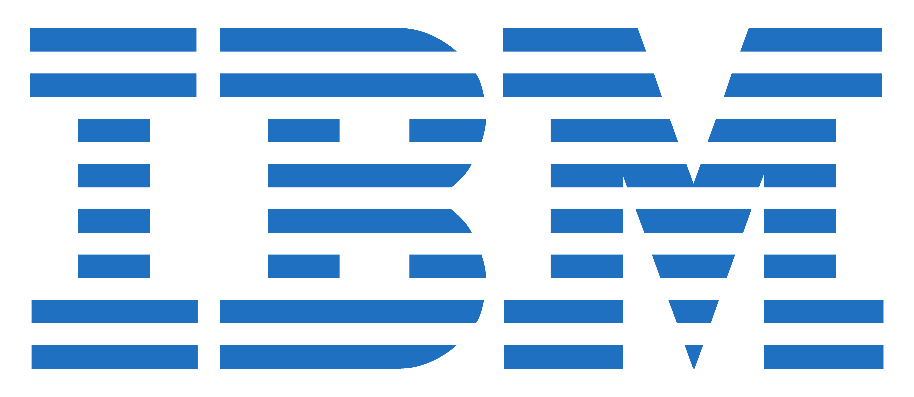
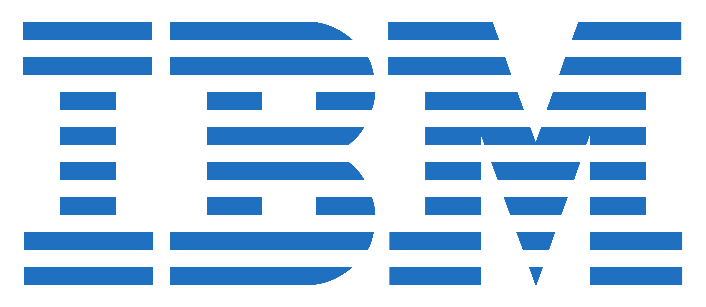
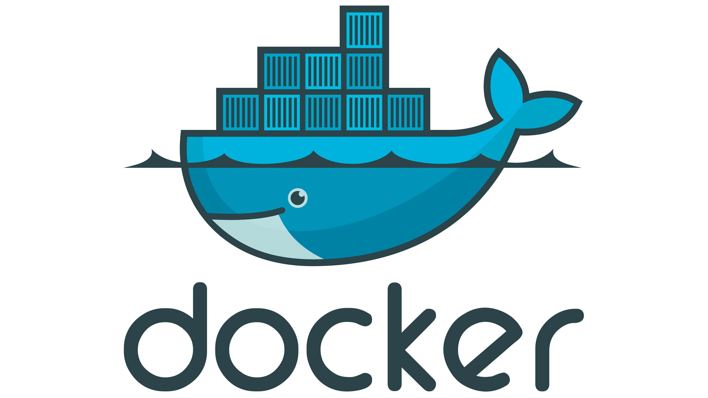
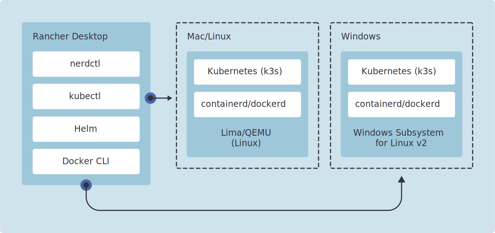

or the search for repeatable results
Oscar Amat
September 2023
Computing is hard
Of course it was, I just didn't know...
- Libraries!
- The C standard library (Libc, glibc, MSVCRT...)
- .so libraries, DLLs, JARs, kernels...
- Architectures!
- Windows: remember DEC Alpha? CE? Now ARM
- What did Windows CE even run in?
- Mac: PowerPC, Intel, M1
- Resolutions!
- Retina, density
- When a pixel is not a pixel
"I'm a full stack developer!"

Windows...

Unix...

Resolutions
This is already solved
The year is 1995...

Write Once Run Everywhere!
Write Once Debug Everywhere!
This is solved (2)
The year is 1999...
 

Enterprise Java Beans
This is solved (3)
The year is 2009...
...
This is solved (14)
...
This is solved (25)
2007
2013
...
This is solved (36)
aka Enterprise Java Beans II
This is NOT solved
I will discuss options and best practices
Nothing will work 100%
Testing

Test environments
- Local
- CI
- Staging
- Smoke Test Production (canary)
- Production Beta (blue/green)
- Production
Common ground
Can we use the same tools locally and in production?
Huge productivity boost if we can
Isolated development environments
chroot
Before containers, there was chroot.
Create a root folder, install barebones OS, link devices. Install code, run.
Still an acceptable option
Same kernel, same architecture.
Containers
Basic idea
Create a container definition file with all dependencies
Build the container, run it with a mounted volume
Build/test/debug/watch inside
Edit the code and control from outside
Docker
Docker desktop -> paid product
Rancher desktop -> free
In theory: same kernel, same architecture
In reality: multiarch hidden behind rosetta/qemu/lima
Mac OS Containers Initiative
Fresh from the oven https://macoscontainers.org/
Provides darwin/arm64 and darwin/amd64 base images and containerd support
Podman
Behaves "Like docker" but no daemon, often run as non-root, replicates cli
Runs at the CRI-O level
Can use docker images, can build own
Can be used with docker-compose (podman-compose)
Podman
Virtual Machines: Vagrant
- Create and manage VMs programmatically
- (Vagrant "boxes")
- Depends on having a Hypervisor
- (virtualbox, qemu etc)
- Ruby and lots of scripting
- Now owned by Hashicorp
Example: creating a kubernetes cluster
Nix and NixOS
Nix is a "functional package manager"
- Reproducible
- Declarative
- Supports atomic upgrades and rollbacks
- Runs on Linux and Mac OS X
Also: some of the most confusing documentation you will find
Nix is a lot of things to a lot of people
- Use flakes
- Create a development environment
- Use it to build and to develop
- Shared flake.nix and flake.lock
NixOS takes it to another level
A whole Linux system declaratively setup
You can use it in a VM